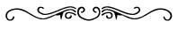

William Blake
(28 Kasım 1757, Londra – 12 Ağustos 1827, Londra)
İngiliz şair, ressam, oymabaskı ustası ve mistik.

Eserleri: Poetical Sketches by W. B. (1783), Masumiyet Şarkıları (1789), The French Revolution (1791, basılamadı, sadece bir prova kopyası var), Songs of Experience (1794), The Poetical Works of W. B. (1893, 3 cilt, der. E.J. Ellis ve W.B. Yeats; aynı isimde ikinci bir derleme, 1913, J. Sampson), The Complete Writings of W. B. ( 1957, der. Geoffrey Keynes), The Letters of W. B. ( 1968, der. Geoffrey Keynes).
Tıpkı basımları: The Note-Book of W. B. – Called The Rosetti Manuscript (1935, der. Geoffrey Keynes), Blake’s Illustrations to The Divine Comedy (1953, der. Albert S. Roe), Blake’s Job: W. B.’s Illustrations of The Book of Job (1966, der. S.F. Damon).